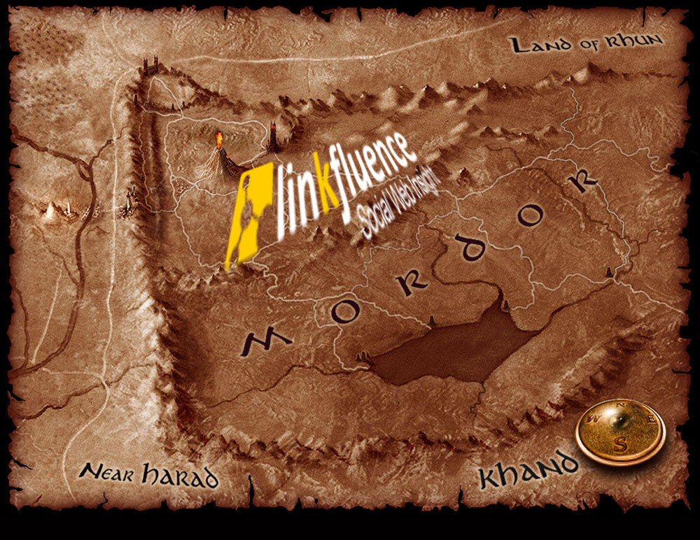

REST in SPORE
PyconFR 2012 - Paris
Arnaud Grausem
Université de Strasbourg / Direction Informatique
Responsable des développements
État des lieux
Système d'information hétérogéne
API lourdes Java
Faits d'arme
Python, langage officiel
Web APIs REST
Clients
Problème
répétitif
lassant
tout sauf sexy
Ça suffit !
def _BuildUrl(self, url, path_elements=None, extra_params=None):
# Break url into consituent parts
(scheme, netloc, path, params, query, fragment) = urlparse.urlparse(url)
# Add any additional path elements to the path
if path_elements:
# Filter out the path elements that have a value of None
p = [i for i in path_elements if i]
if not path.endswith('/'):
path += '/'
path += '/'.join(p)
# Add any additional query parameters to the query string
if extra_params and len(extra_params) > 0:
extra_query = self._EncodeParameters(extra_params)
# Add it to the existing query
if query:
query += '&' + extra_query
else:
query = extra_query
# Return the rebuilt URL
return urlparse.urlunparse((scheme, netloc, path, params, query, fragment))
Idée
laisser la machine faire
comment ?
une librairie ?
chercher autre part ?
Linkfluence
http://fr.linkfluence.net
Franck Cuny, Nils Grünwald
Constat
Implémentation systématique de la gestion :
- des requêtes et des réponses HTTP
- de l'authentification et des autorisations
- des formats de réception des données
Et pourtant... pour quel objectif ?
Envoyer des données
Traiter des données receptionnées
One specification to rule them all

SPORE
Specification to a POrtable Rest Environment
Décrire des API Web REST
Document texte simple et lisible : JSON
Implémentations spécifiques à chaque langage
But
API cliente simple
compréhensible
se concentrer sur la logique du client
gagner du temps

Ecosystème
communauté grandissante
un prêcheur infatigable: Camille Maussang
Implémentations
Des clients ont été implémentés et sont fonctionnels en:
Descriptions
https://github.com/SPORE/api-description


Acmeism
une description à jour
tous les clients à jour
pour tous les langages
Et Python ?

Spyre
en cours de développement
par Damien Leroux, Franck Cuny et moi-même
dépôt officiel : https://github.com/blob/sypre
mon fork: https://github.com/agrausem/spyre
La spécification
comment décrire un service REST
comment implémenter un client
comment implémenter des middlewaresDécrire un service Web - Généralités
{
"name" : "Redmine API",
"authority" : "GITHUB:Keen-github",
"base_url": "http://redmine.domain.fr",
"formats" : [
"json",
"xml"
],
"version" : "0.1",
"meta" : {
"documentation" : "http://www.redmine.org/projects/redmine/wiki/Rest_api",
"authors" : "LogicEditor.com: Valeriy Skurikhin"
}
"methods" : {
...
},
}
Décrire un service Web - Les méthodes
"methods": {
"get_user" : {
"path" : "/users/:id.:format",
"required_params" : [
"id",
"format"
],
"method" : "GET",
"authentication" : true
},
"list_users" : {
"path" : "/users.:format",
"required_params" : [
"format"
],
"optional_params" : [
"limit",
"offset"
],
"method" : "GET",
"authentication" : true
},
...
},Implémenter un client
construction d'un client Spore à partir d'une spécification
meta-programming
activation / désactivation de middlewares en cours d'exécution
import spyre
client = spyre.new_from_spec('redmine.json')
client.enable('auth.Basic', username="toto", password="tata")
Appel de méthodes
depuis l'objet client généré
des arguments obligatoires
des arguments optionnels
Exécution d'une méthode
construction de l'environnement de la requête
prise en charge les middlewares activés
envoie de la requête
contrôle des codes de retour de la réponse
Exemple
import spyre
client = spyre.new_from_spec('redmine.json',
base_url="https://my-redmine.mydomain.org")
client.enable('auth.Basic', username="toto", password="tata")
response = client.get_user(id='3', format='json')
assert(reponse.base, "http://my-redmine.mydomain.org:443/users/3.json")
assert(response.status, "200")
my_user = response.content
assert(my_user,
'{"user":{"lastname":"Toto","login":"toto","firstname":"Toto",
"mail":"toto@gmail.com","created_on":"2012/01/05 16:47:32 +0100",
"last_login_on":"2012/09/06 18:27:26 +0200","id":3}}'
)
L'environnement de la requête
une structure de données (e.g. dictionnaire)
certaines clés -> WSGI (PEP333)
d'autres -> définies par et pour SPORE
modifiable durant l'éxecution par les middlewares
utilisée pour construire la requête finale
Exemple
{
'spore.headers': [('Authorization', 'Basic dG90bzp0YXRh')],
'HTTP_USER_AGENT': 'spyre',
'SERVER_NAME': 'my-redmine.mydomain.org',
'spore.userinfo': None,
'spore.authentication': True,
'SCRIPT_NAME': ['', 'redmine'],
'spore.url_scheme': 'https',
'spore.formats': None,
'spore.payload': 'payload',
'REQUEST_METHOD': u'GET',
'spore.expected_status': [],
'PATH_INFO': u'/users/:id.:format',
'SERVER_PORT': 443,
'spore.errors': '',
'QUERY_STRING': '',
'spore.params': ['id', '3', 'format', 'json'],
'REQUEST_URI': ''
}
Les middlewares
modifier l'environnement de la requête
activer un callback
retourner directement une réponse
Exemple
import spyre
client = spyre.new_from_spec('redmine.json',
base_url="https://my-redmine.mydomain.org")
client.enable('auth.Basic', username="toto", password="tata")
client.enable('format.Json')
response = client.get_user(id='3', format='json')
my_user = response.content
assert(type(my_user, dict))
assert(my_user['user']['login'], 'toto')
Spyre - Fonctionnalités
méthodes GET et DELETE
authentification Basic et via Header
format JSON
Spyre - Reste à faire
autres formats (e.g. XML, etc)
gestion du payload pour POST et PUT
autres verbes HTTP (e.g PATCH, etc...)
oauth
ménage !
Demain ?
(Ré)spyre(r)

Merci !